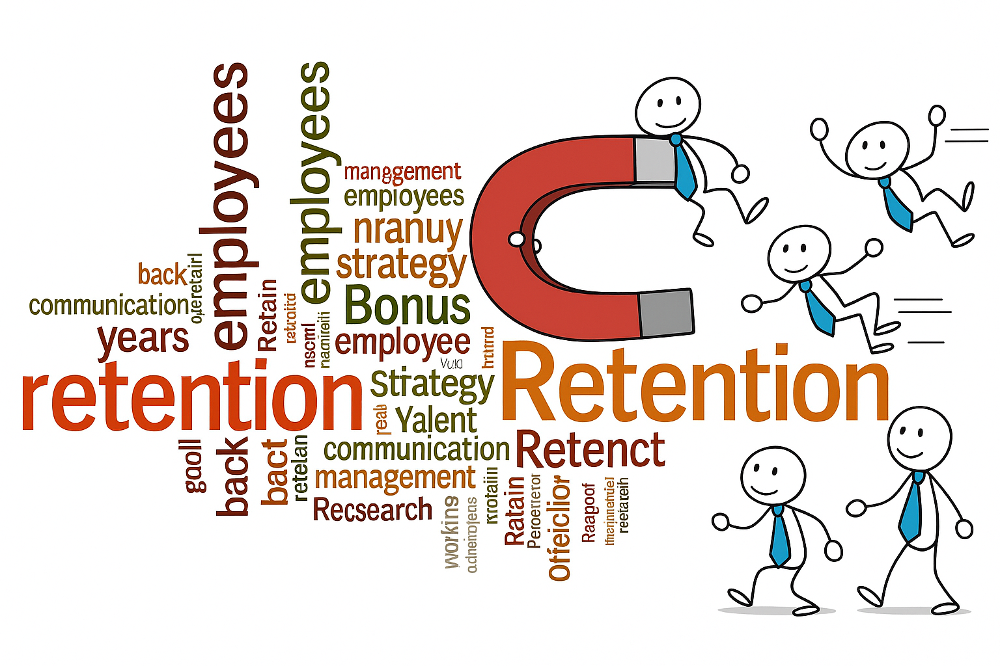

This project showcases my Python skills in data cleaning, exploratory data analysis (EDA), feature engineering, and predictive modeling. Using employee data, I applied statistical techniques and machine learning models—Decision Tree, Random Forest, and Logistic Regression—to identify key factors influencing attrition and generate actionable insights for improving retention.


This project highlights my SQL skill in cleaning, transforming, and preparing the data for Tableau visualization, identifying anomalies, assessing state-level production trends, and delivering insights to support strategic planning.
This project showcases my R skills in data cleaning, exploratory data analysis, and visualization. Using Fitbit smart device data, I analyzed activity and sleep patterns to uncover consumer behavior insights that support Bellabeat’s product development and marketing strategies.
This project showcases my data visualization skills using Tableau to analyze repeat customer support calls for Google Fiber. I developed an interactive dashboard and delivered stakeholder-focused insights and an executive summary to support leadership decision-making.

This project showcases my proficiency in HTML5 and CSS through the development of a fully responsive portfolio website. The site you’re viewing now is the result of this work, featuring an enhanced layout, intuitive navigation, and visuals to effectively present my projects.